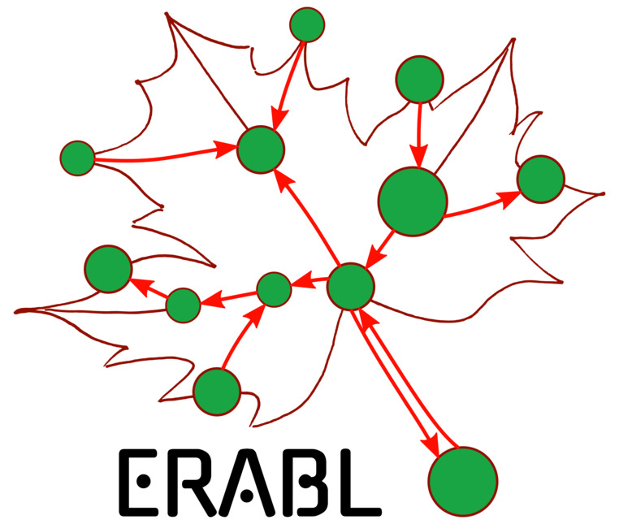

ERABLab
Ecological and Resilient Autonomous roBots Lab
|
 |
Building robotic systems
in harmony with the environment.
|
Contacts
Engineering 5
Room 5039
Department of Electrical and Computer Engineering
University of Waterloo
200 University Avenue West
Waterloo, ON N2L 3G1
Canada
+1 (519) 888-4567 x40952
gennaro\(\ldotp\)notomista\(@\)uwaterloo\(\ldotp\)ca
News
2025/7/1 — Paper on energy-aware control of multi-mode robots accepted at IEEE L-CSS
2025/6/4 — Paper on boundary control barrier functionals for traffic flow dynamics accepted at IEEE L-CSS
2025/4/29 — Paper on music-driven robot swarm painting accepted at ARSO 2025
2025/4/8 — 3 papers accepted at MED 2025
2025/2/17 — Paper on decentralized swarm density control accepted at IEEE RA-L
2024/12/19 — Paper on learning concurrently executable robotic tasks accepted at AAMAS 2025
2024/12/9 — Paper on safe robot navigation accepted at IEEE T-CST
2024/7/5 — Pre-ACC minisymposium @ University of Waterloo
2024/7/1 — Paper on design and density control of robotic swarms accepted at DARS 2024
2024/1/8 — Zii joins the lab
2023/9/6 — Tahmid, Andrew, and Mason join the lab
2023/1/9 — Ramisha joins the lab
2022/9/7 — Justine joins the lab
|